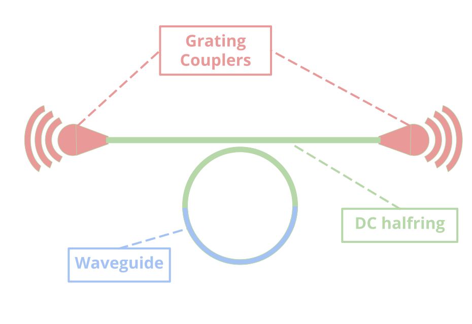

Micro Ring Resonator (MRR)
Contents
Micro Ring Resonator (MRR)¶
We use SiEPIC EBeam library in this tutorial.
This notebook walks through the process of setting up and simulating a micro ring resonator device using the OPICS package.
A ring resonator consists of an optical waveguide which is looped back on itself, such that a resonance occurs when the optical path length of the resonator is exactly a whole number of wavelengths. In simple terms, an all pass ring resonator can be thought of consisting input/output components, evanescent coupling region like a directional coupler, and a waveguide (as shown below). 
import time, warnings
import numpy as np
import matplotlib.pyplot as plt
import opics
____ ____ _______________
/ __ \/ __ \/ _/ ____/ ___/
/ / / / /_/ // // / \__ \
/ /_/ / ____// // /___ ___/ /
\____/_/ /___/\____//____/
OPICS version 0.2.1
Define network¶
Create an instance of Network class, which is used to add, connect, and simulate circuit components.
circuit_name = "mrr"
circuit = opics.Network(circuit_name)
Add circuit components¶
Add grating couplers, evanescent coupler (e.g. directional coupler halfring), and a waveguide. You can define custom frequency data points for a component as well (see the example for output_GC).
input_gc = circuit.add_component(ebeam.GC())
output_gc = circuit.add_component(ebeam.GC())
wg = circuit.add_component(ebeam.Waveguide(length=np.pi*5e-6))
dc_halfring = circuit.add_component(ebeam.DC_halfring())
Define circuit connectivity¶
In this section, we define the component connections. The connections are defined using Network.connect, e.g.Network.connect(component1, component1_port, component2, component2_port)
#connect components
circuit.connect(input_gc, 1, dc_halfring, 0)
circuit.connect(dc_halfring, 1, wg, 0)
circuit.connect(wg, 1, dc_halfring, 3)
circuit.connect(dc_halfring,2, output_gc,1)
Simulate the circuit¶
warnings.filterwarnings('ignore') #ignore all/complex number warnings from numpy or scipy
sim_start = time.time()
#simulate network
circuit.simulate_network()
print("simulation finished in %ss"%(str(round(time.time()-sim_start,2))))
simulation finished in 0.01s
Visualize the simulation result¶
circuit.sim_result.plot_sparameters(show_freq = False, scale="abs_sq", ports = [[1,0], [0,0]])